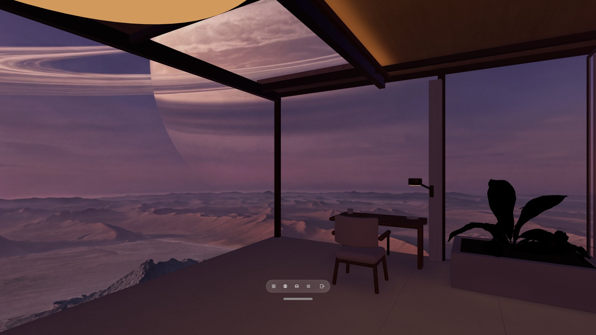
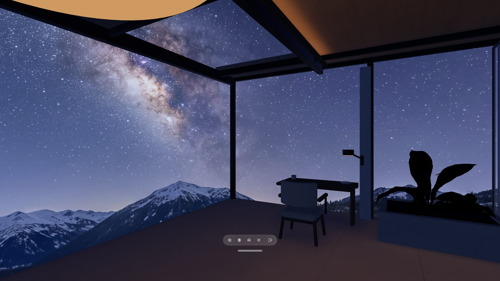
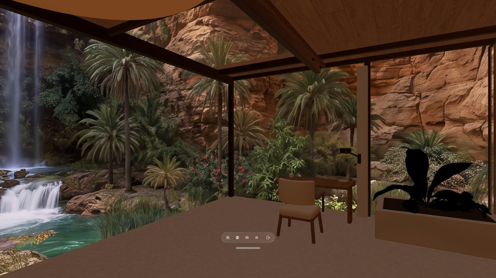
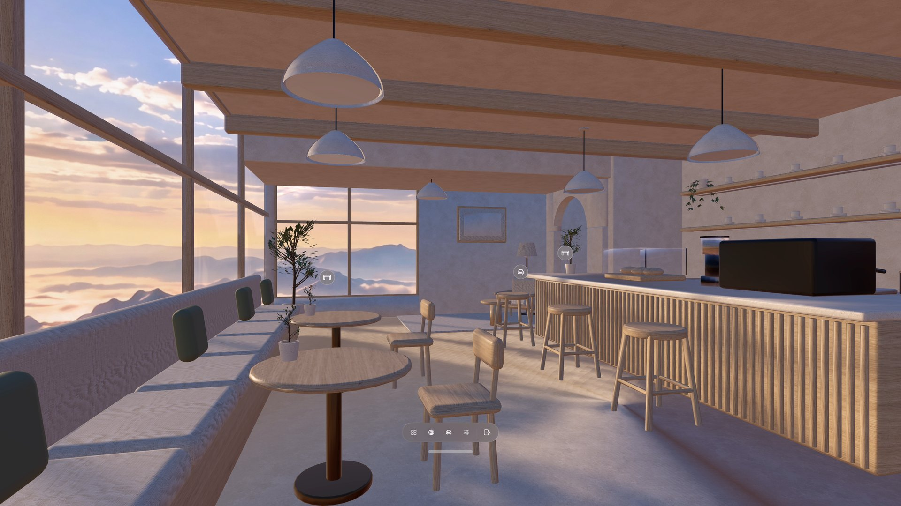
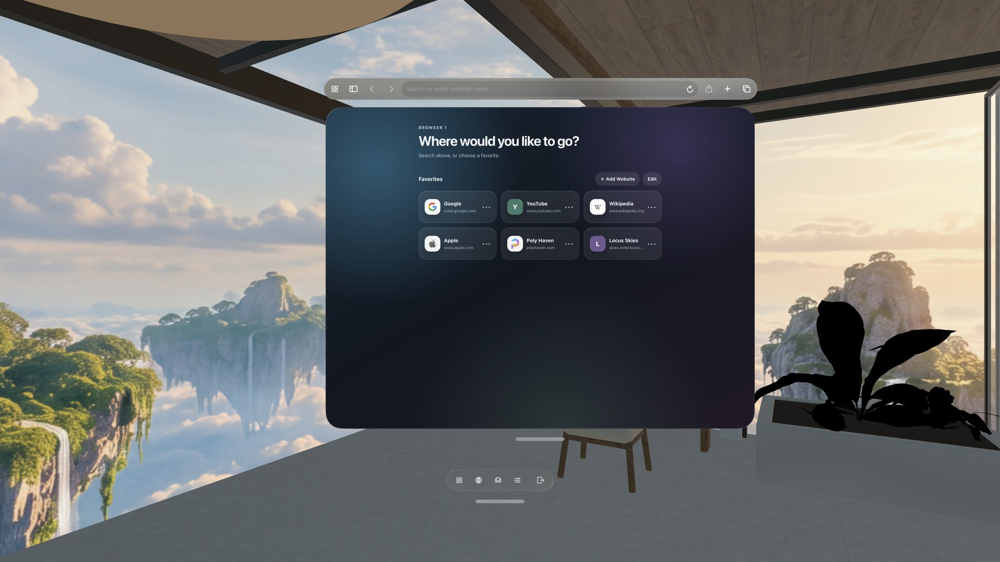
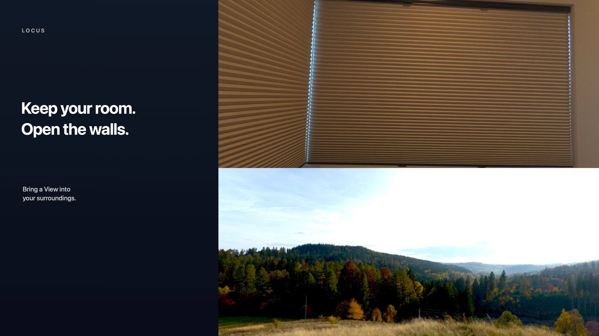
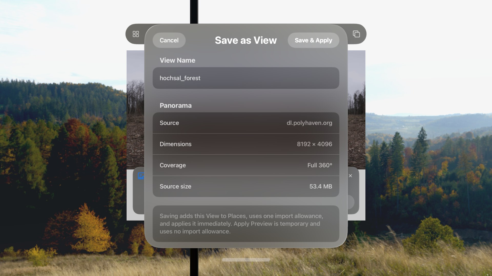
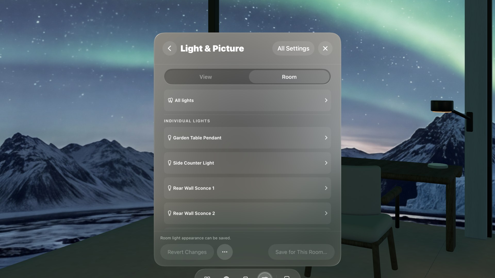
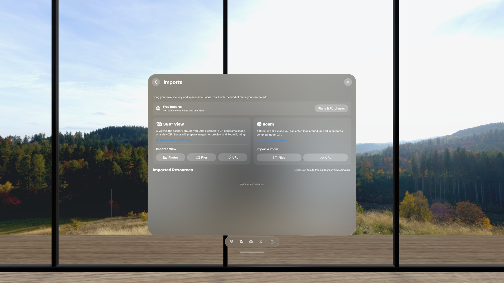

A spatial workspace for Apple Vision Pro.
Combine a 360° View with a 3D Room, keep your real desk within reach, and arrange the web pages you need around you.
Available now for Apple Vision Pro. Core features are free to use, with optional in-app purchases. Explore what’s new in Locus
New in Locus 1.2
One place to choose, and a seat that’s yours.
Rooms, Views, and everything you can download now live together in Places. Seats stay visible in the Room, you can add seats of your own, and a simpler bar keeps the controls for your current Place one tap away.
- Everything in PlacesRooms, Views, and downloads share one window. Filter by Animated or With Sound. Update All handles the updates you can download.
- Look, and sit thereOpen Seats, then pinch a marker anywhere in the Room. Add seats of your own, too.
- Lamps you can switchLook at a lamp and pinch to turn just that lamp on or off.
- A simpler barPlaces, Open Browser, Seats, Settings, and Leave—plus any Quick Controls you pin with Customize Bar.
Places
Choose a 360° View and a 3D Room.
Mix the scenery and space you want, then enter Virtual Space or open a Room Portal.


Virtual Space
A calmer place to focus.
Turn away from the desk and the Room continues around you, with your chosen View outside the windows.
What you can do
Shape the space around you.
Start with a Room and View, then keep the tools and surroundings that make the place yours.






Learn Locus
From your first Place to one you made yourself.
Follow short, task-based tutorials for choosing a Place, bringing in a panorama, using Mac Virtual Display, reclining comfortably, and creating your own Views and Rooms. A web panorama must be an exact 2:1 image displayed at 4,096 × 2,048 or larger.
Explore all tutorialsFind Views online
Open the format reference

Community
Made with Locus.
Share your skyboxes, spaces, and environments with other creators, or discover what the community is building.
Explore the Community